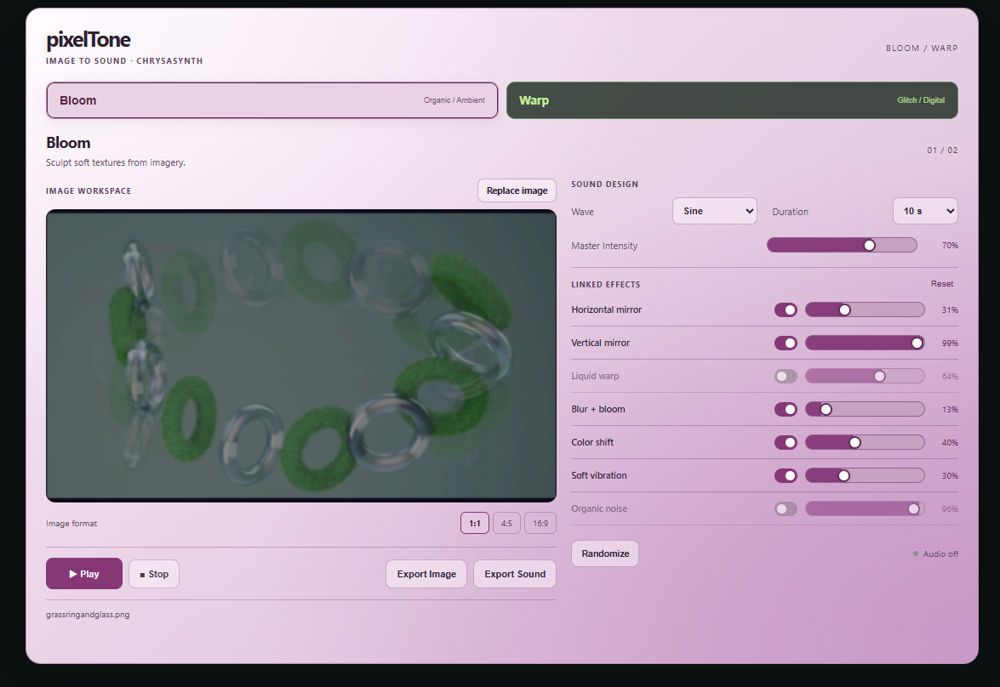
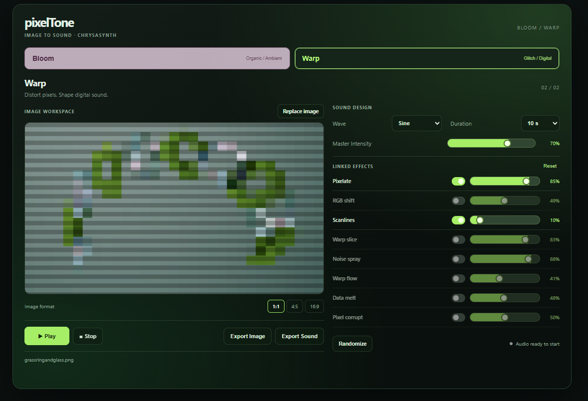

Exploring Sound Through Images
Two creative approaches to audiovisual experimentation.
A texture can suggest a sound before we have heard a single note. The softness of a blurred image, the repetition of a geometric pattern or the sharp edges of a digital glitch can become starting points for sonic exploration.
pixelTone brings these two forms of expression into a shared creative workspace. Rather than treating an image as something to illustrate a finished track, it invites us to work with visual and sonic material at the same time.
From image to sound
Sound and image do not share the same physical properties, but they can share expressive qualities. A sense of movement, density, contrast or space can emerge in either medium. Designing a relationship between them is a creative decision, not a fixed rule.
In pixelTone, linked controls modify the image and the synthesised sound together. The image itself is not directly converted into audio: instead, the effects establish connections between visual transformations and sound processing. Two independent engines explore this relationship from different perspectives.
Bloom: organic expression
Bloom approaches imagery through softness, symmetry and fluid movement. Mirroring is linked to stereo positioning, while Liquid Warp introduces vibrato. Blur + Bloom adds reverberation, allowing visual diffusion and sonic depth to develop together.

In this example, the original ring sculpture becomes a layered arrangement of repeated forms. The linked controls offer a way to explore changes in stereo balance, filtering and modulation while observing the evolving image.
Try starting with a single effect and increasing its intensity slowly. Then introduce a second effect and listen to how the two interact. This approach makes it easier to recognise what each transformation contributes, without losing the freedom to experiment.
Warp: digital fragmentation
Warp explores a different vocabulary: pixelation, scanlines, digital noise and distortion. Pixelate is linked to audio distortion and filtering, while Scanlines controls tremolo. RGB Shift and Warp Flow provide further possibilities for modulation.

The rings are still recognisable, but their smooth surfaces have given way to a more rigid, digital texture. With the linked effects, a visual decision can also become a sonic one. Try increasing Pixelate while listening, then introduce Scanlines to explore the contrast between distortion and rhythmic amplitude modulation.
Experiment without expectations
Import an image into Bloom or Warp, press Play and explore the linked effects. Keep the original image constant while changing the settings, or use a different visual source to inspire a new direction. Neither approach requires a predetermined musical outcome.
When a combination catches your attention, export the sound as a WAV file or save the transformed image as a PNG. The resulting audio can become a layer in a soundscape, a source for further processing or simply a new texture in your personal sound library.
Let the interaction between image and sound guide the experiment. The most interesting result may be the one you did not set out to create.